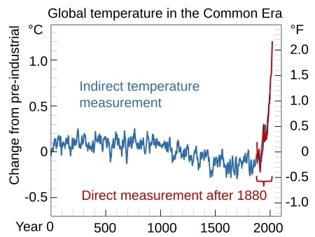

In common usage, climate change describes global warming the ongoing increase in global average temperature and its effects on Earth's climate system. Climate change in a broader sense also includes previous long-term changes to Earth's climate. The current rise in global average temperature is primarily caused by humans burning fossil fuels since the Industrial Revolution. Fossil fuel use, deforestation, and some agricultural and industrial practices add to greenhouse gases. These gases absorb some of the heat that the Earth radiates after it warms from sunlight, warming the lower atmosphere. Carbon dioxide, the primary greenhouse gas driving global warming, has grown by about 50% and is at levels unseen for millions of years.
Global temperature rise
Over the last few million years human beings evolved in a climate that cycled through ice ages, with global average temperature ranging between 1 °C warmer and 5–6 °C colder than current levels. One of the hotter periods was the Last Interglacial between 115,000 and 130,000 years ago, when sea levels were 6 to 9 metres higher than today. The most recent glacial maximum 20,000 years ago had sea levels that were about 125 metres (410 ft) lower than today.

Temperatures stabilized in the current interglacial period beginning 11,700 years ago. Historical patterns of warming and cooling, like the Medieval Warm Period and the Little Ice Age, did not occur at the same time across different regions. Temperatures may have reached as high as those of the late 20th century in a limited set of regions. Climate information for that period comes from climate proxies, such as trees and ice cores.
What are the other effects of global warming?
Each year scientists learn more about the consequences of global warming, and each year we also gain new evidence of its devastating impact on people and the planet. As the heat waves, droughts, and floods associated with climate change become more frequent and more intense, communities suffer and death tolls rise. If we’re unable to reduce our emissions, scientists believe that climate change could lead to the deaths of more than 250,000 people around the globe every year and force 100 million people into poverty by 2030.
Global warming is already taking a toll on the United States. And if we aren able to get a handle on our emissions, here just a smattering of what we can look forward to:
Disappearing glaciers, early snowmelt, and severe droughts will cause more dramatic water shortages and continue to increase the risk of wildfires in the American West.
Rising sea levels will lead to even more coastal flooding on the Eastern Seaboard, especially in Florida, and in other areas such as the Gulf of Mexico.
Forests, farms, and cities will face troublesome new pests, heat waves, heavy downpours, and increased flooding. All of these can damage or destroy agriculture and fisheries.
Disruption of habitats such as coral reefs and alpine meadows could drive many plant and animal species to extinction.
Allergies, asthma, and infectious disease outbreaks will become more common due to increased growth of pollen-producing ragweed, higher levels of air pollution, and the spread of conditions favorable to pathogens and mosquitoes.